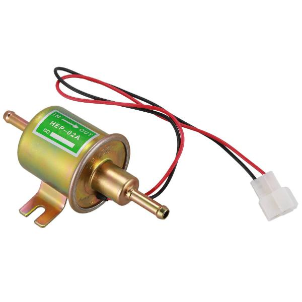
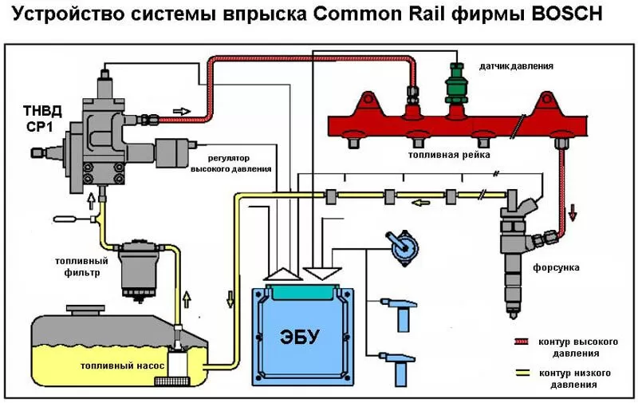

Назначение топливного насоса высокого давления
"Топливный насос низкого давления (ТННД) — это компонент системы питания, который подает топливо из бака к насосу высокого давления
и создает минимальное необходимое давление для его работы"
Устройство. Представляет собой компактный насос с электрическим приводом, который может быть установлен как внутри топливного бака (чаще всего), так и снаружи.
Он состоит из:
Сеточка грубой очистки
Электромоторчика
Копруса
Выглядит он так:

Принцип работы ТННД.
Pоликовый/шестеренчатый насос. Электродвигатель приводит в движение рабочую часть (ролики или шестерни), которая создает давление и перекачивает топливо.
Струйный насос. Электрический насос создает поток, который через инжектор подхватывает дополнительное топливо из бака и подает его в систему.
Tурбинный насос. Использует вращающуюся крыльчатку для создания потока, который перекачивает топливо.
Функции.
Подкачка топлива. Основная задача — подать топливо из бака, преодолевая сопротивление топливопроводов и фильтров.
Поддержание давления. Обеспечивает стабильное давление в контуре низкого давления, что необходимо для правильной работы всей системы питания, особенно для насоса высокого давления в дизельных системах.
Прокачка системы. В дизельных двигателях с механическим ТННД может использоваться для прокачки системы после замены фильтра или ремонта.
Расположение ТННД на схеме питания
